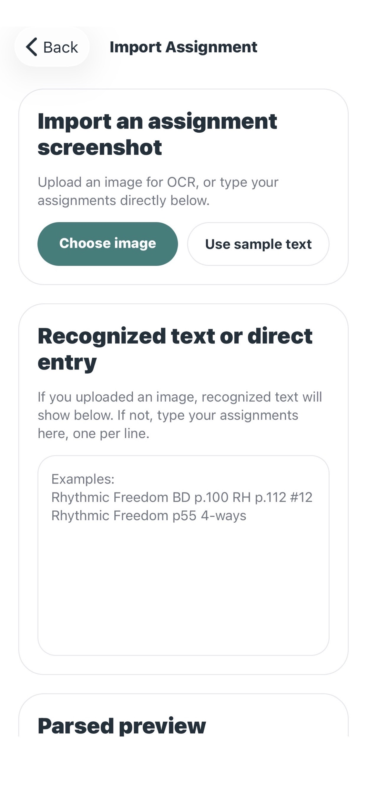
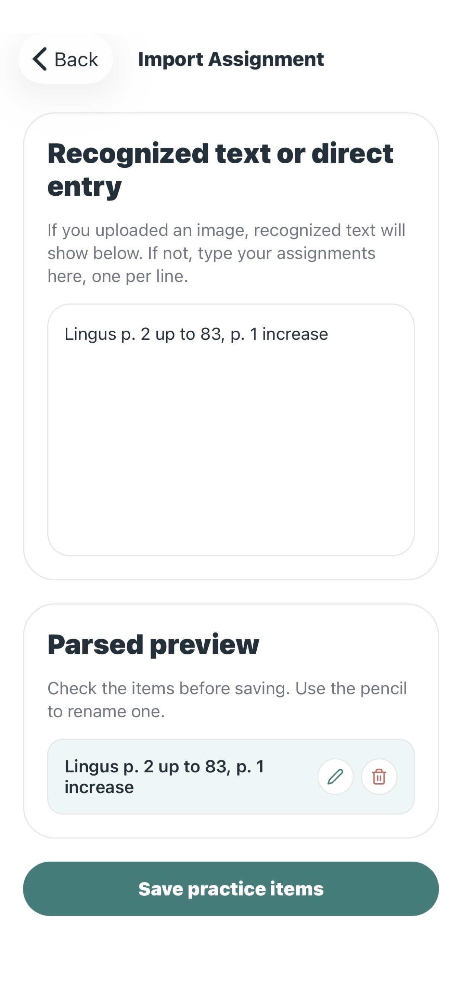
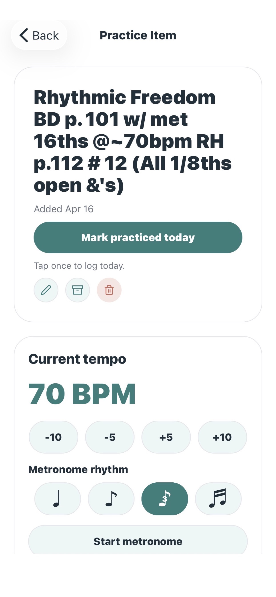
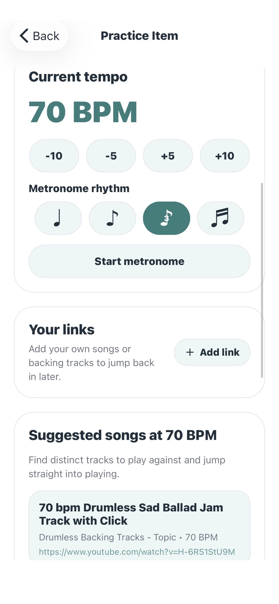
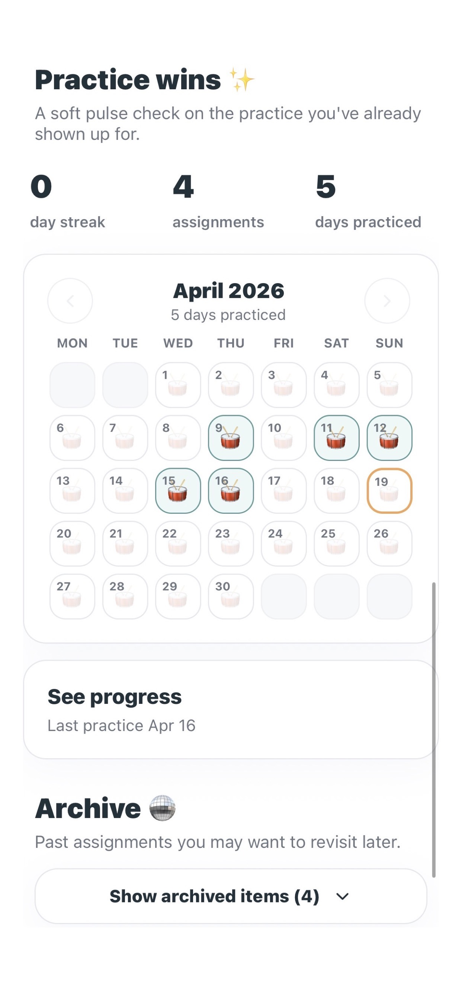
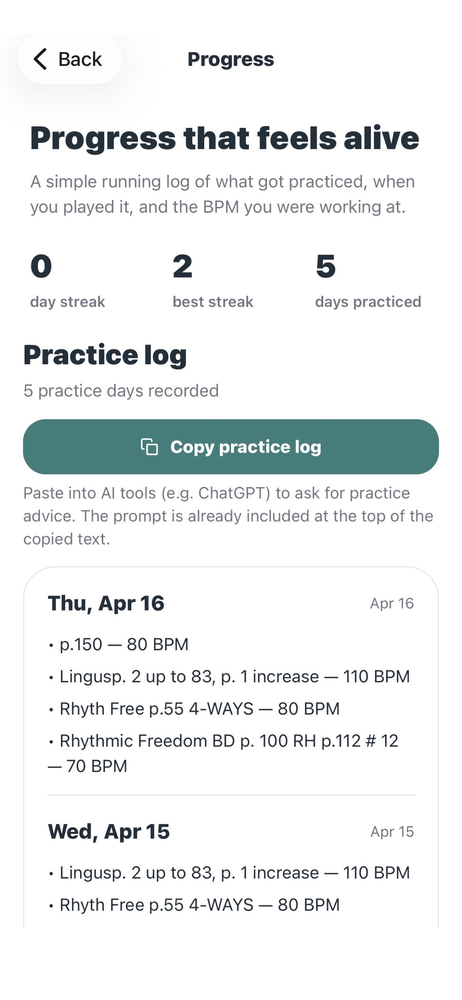

Sorane
Less friction. More playing.
A calm little practice companion for musicians who want assignments, tempo, tracks, and progress in one place.
How Sorane works
Six small pieces of the practice loop.
Sorane keeps the essentials together: what to practice, what tempo you were at, what to play against, and what has already been worked on.
01
See the whole practice picture.
Your active queue, streak, and monthly practice calendar live together, so it is easy to see what is next and how recently you played.
02
Bring in the assignment.
Bring in a screenshot or typed text, review the recognized text, then edit or remove parsed practice lines before saving a cleaner queue.


03
Hold onto the tempo.
Each practice item remembers its current BPM and includes a built-in metronome with subdivision choices, so getting back into a piece takes less setup.

04
Keep a few tracks nearby.
Sorane can surface suggested tracks for the current BPM, and you can save your own backing track, lesson, or song links right on the item.

05
Let progress stay gentle.
A monthly calendar, current streak, best streak, and total practice days give you a gentle pulse check on what you have already shown up for.

06
Keep a log you can come back to.
Every practice day is saved with the date and BPM. When you want outside feedback, you can copy the log with the prompt already included and paste it into AI tools.

A final note
Sorane shortens the distance between "I should practice" and "I'm already playing". If you have questions, ideas for making the app better, or are interested in collaborating, reach out at hello@getsorane.com.